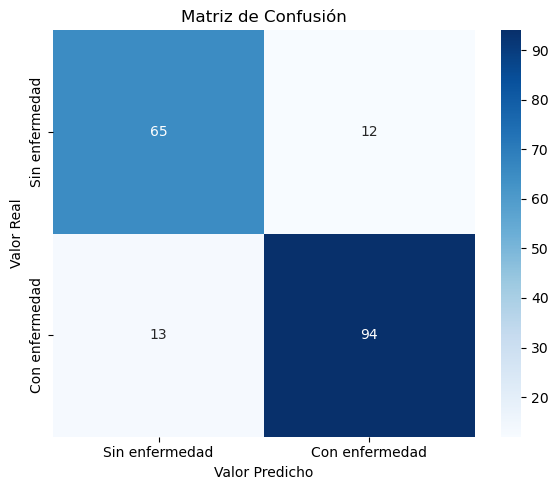
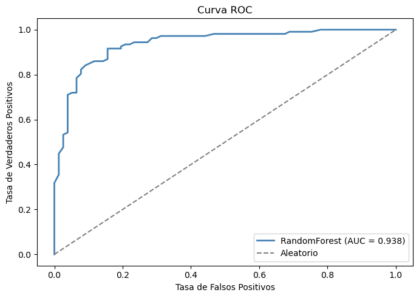

Etapa 2: Modelado con Validación Segura#
import pandas as pd
import numpy as np
import matplotlib.pyplot as plt
import seaborn as sns
from sklearn.model_selection import train_test_split, GridSearchCV
from sklearn.pipeline import Pipeline
from sklearn.preprocessing import MinMaxScaler, StandardScaler
from sklearn.ensemble import RandomForestClassifier
from sklearn.metrics import (confusion_matrix, roc_auc_score,
roc_curve, accuracy_score,
classification_report)
import warnings
warnings.filterwarnings('ignore')
df = pd.read_csv("../data/heart.csv")
df_encoded = pd.get_dummies(df, columns=['Sex', 'ChestPainType',
'RestingECG', 'ExerciseAngina',
'ST_Slope'])
X = df_encoded.drop('HeartDisease', axis=1)
y = df_encoded['HeartDisease']
X_train, X_test, y_train, y_test = train_test_split(
X, y, test_size=0.2, random_state=42)
print("X_train:", X_train.shape)
print("X_test: ", X_test.shape)
X_train: (734, 20)
X_test: (184, 20)
# Pipeline con RandomForest (el mejor modelo según el ranking en la primera etapa)
pipe = Pipeline([
("scaler", MinMaxScaler()),
("clf", RandomForestClassifier(random_state=42))
])
param_grid = {
"clf__n_estimators": [50, 100, 200],
"clf__max_features": [3, 5, 7]
}
grid = GridSearchCV(pipe, param_grid, cv=5, scoring="roc_auc", n_jobs=-1)
grid.fit(X_train, y_train)
print("Mejores parámetros:", grid.best_params_)
print("Mejor AUC en CV: ", round(grid.best_score_, 3))
Mejores parámetros: {'clf__max_features': 3, 'clf__n_estimators': 100}
Mejor AUC en CV: 0.925
y_pred = grid.predict(X_test)
y_proba = grid.predict_proba(X_test)[:, 1]
print("EVALUACIÓN")
print(f"AUC: {roc_auc_score(y_test, y_proba):.3f}")
print(f"Accuracy: {accuracy_score(y_test, y_pred):.3f}")
print("\nReporte de clasificación:")
print(classification_report(y_test, y_pred,
target_names=["Sin enfermedad", "Con enfermedad"]))
EVALUACIÓN
AUC: 0.938
Accuracy: 0.864
Reporte de clasificación:
precision recall f1-score support
Sin enfermedad 0.83 0.84 0.84 77
Con enfermedad 0.89 0.88 0.88 107
accuracy 0.86 184
macro avg 0.86 0.86 0.86 184
weighted avg 0.86 0.86 0.86 184
cm = confusion_matrix(y_test, y_pred)
plt.figure(figsize=(6, 5))
sns.heatmap(cm, annot=True, fmt='d', cmap='Blues',
xticklabels=["Sin enfermedad", "Con enfermedad"],
yticklabels=["Sin enfermedad", "Con enfermedad"])
plt.title("Matriz de Confusión")
plt.ylabel("Valor Real")
plt.xlabel("Valor Predicho")
plt.tight_layout()
plt.savefig('../notebooks/matriz_confusion.png')
plt.show()

fpr, tpr, _ = roc_curve(y_test, y_proba)
auc_score = roc_auc_score(y_test, y_proba)
plt.figure(figsize=(7, 5))
plt.plot(fpr, tpr, color='steelblue', linewidth=2,
label=f'RandomForest (AUC = {auc_score:.3f})')
plt.plot([0, 1], [0, 1], color='gray', linestyle='--', label='Aleatorio')
plt.xlabel('Tasa de Falsos Positivos')
plt.ylabel('Tasa de Verdaderos Positivos')
plt.title('Curva ROC')
plt.legend()
plt.tight_layout()
plt.savefig('../notebooks/curva_roc.png')
plt.show()

import joblib
joblib.dump(grid.best_estimator_, '../model.joblib')
print("Modelo guardado como model.joblib")
Modelo guardado como model.joblib
Análisis Etapa 2#
Se dividieron los datos antes de cualquier transformación.
El pipeline garantiza que el escalado ocurra dentro de cada fold de la validación cruzada.
El mejor modelo es RandomForest con los parámetros encontrados por GridSearchCV.
La matriz de confusión muestra que el modelo Random Forest tuvo un buen desempeño en la clasificación de pacientes con y sin enfermedad. La mayoría de los casos fueron clasificados correctamente, obteniendo 65 verdaderos negativos y 94 verdaderos positivos. Los errores fueron relativamente bajos, con 12 falsos positivos y 13 falsos negativos. Esto sugiere que el modelo tiene una buena capacidad predictiva y una precisión general cercana al 86%.
La curva ROC se mantiene muy por encima de la línea diagonal aleatoria, lo que indica que el modelo tiene una alta capacidad para distinguir correctamente ambas clases, y confirma un buen modelo con AUC 0.938